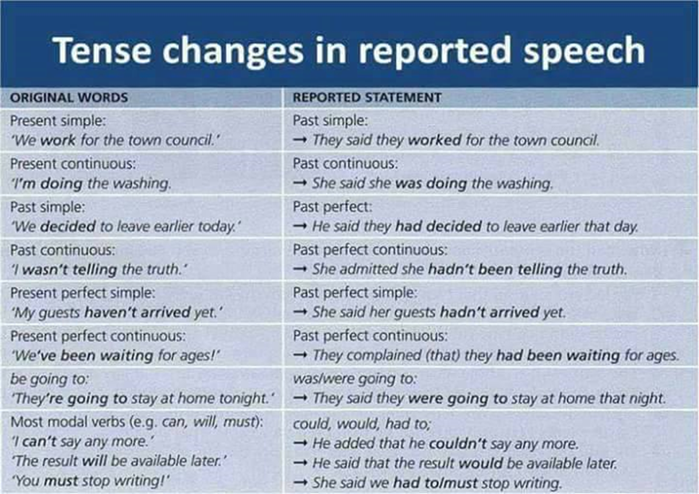

Reported Speech
No change needed
A) Past Perfect (S, C), could, would, should, might mustn’t.
B) When the situation in the direct speech is still true/unchanged.
“I really like your friend.” → She said she really likes you.
“Bananas are a good source of energy.”
→ The doctor told us that bananas are a good source of energy.
C) When the verb follows the linking words after or because.
“I locked the door after I finished cleaning”.
→ She told him he had locked the door after she finished cleaning.
“I am annoyed because I was talking and you interrupted me”.
→ She said she was annoyed because she was talking and I interrupted her.
Change of pronouns
- This /These → That/ Those
- I/ We → he/she/ they
- Me /us → him/ her/ them
- My → his/her
- Our → their
Other changes
- Today → that day
- Tonight → that night
- Tomorrow → the next day/ the following day
- Ago → before, earlier
- Yesterday → the day before/ the previous day
- Last (week, month) → the previous ..
- Now → then , at that time
- Here → there
- This → that
Reported questions
1. Reported Yes/No questions:
If/whether + change the word order (indirect question)
“Did the Minister answer your questions?”
→ She asked me if/whether the Minister had answered my questions.
2. Reported wh-questions
Ask+ wh-word+ indirect question word order
“When will the article appear in the newspaper?”
→ They asked us when the article would appear in the newspaper.
Reported imperatives
Reporting verb + object+ to infinitive
1. Reporting orders (tell)
The doctor said, ‘Stop working so hard.’
→ The doctor told me to stop working so hard.
2. Reporting requests (ask)
My mother said, ‘Will you please tidy your room?’
→ My mother asked me to tidy my room.
3. Reporting advice (advise, tell, warn)
Dad said, ‘Be careful- there is ice on the roads.’
→ Dad warned me to be careful because there was ice on the roads.
4. Negative orders, requests, advice
‘Please do not bring food into the shop.’
→ The assistant asked us not to bring food into the shop.
Reporting verbs + that clause
- No object- add, admit, announce, claim, complain, explain, insist, reply, respond, say, state, suggest
- Object needed- tell, warn
Reported statements
When we report speech in the present, we use the same tenses,
but we have to change the pronouns and verb forms when necessary.
I am really hungry because I haven’t eaten since breakfast,’ said Anabel.
Anabel says (that) she is really hungry because she hasn’t eaten since breakfast.
When we report another person’s word after she/he said them,
we use a reporting verb in a past tense and we also change the tense
of the other verbs as well.
Anabel said (that) she was really hungry because she hadn’t eaten since breakfast.
| Direct speech |
Reported speech |
| we quote the exact words of the speaker and do not change them in any way |
we report speaker’s words using reporting verbs, such as:
say, tell, ask, suggest, reply… and make necessary changes |
| ‘Your son draws very well.’ |
Your son draws very well. |
| They said, ‘Your son draws very well.’ |
She told me that my son draws/drew very well. |

Art critic
curator
gallery
painting
sculpture
work of art - umelecke dielo
author
autobiographical
cover - obal
describe
detective novel
extract
main character
narrator - rozpravac
novel
poem - basen
tell a story
cable television
chat show
documentary
music programme
quiz/game show
reality TV/reality show
satellite television
sitcom
soap opera
sports programme
talent/music competition
the news/current affairs
TV channel
TV network
TV series/serial
action film
adaptation
advert - inzerat
audience - publikum
audition - konkurz
band
be nominated for an Oscar
broadcast
celebrity
challenge
chance of winning
coach
compete
competition
competitor - konkurent
contest - sutaz
contestant
direct
director
edit
edition - vydanie
editor
eliminate
enter a competition
entertain
entertainer
entertainment
episode
fail
female/male artist
festival-goer - navstevnik
hidden camera
in the spotlight - v centre pozornosti
interview sb
judge
live
movie
movie business
music label - hudobna znacka
Oscar ceremony
panel - porota
perform - hrat
perfomance - vykon
performer - umelec
photo session
play a role
pop singer
present
presentation
presenter- moderator
produce
producer
production - vyroba
professional
recording contract
rehearsal - skuska
reunion show
royalty - honorar
scene
screenplay
script - scenar
solo artist
song lyrics
stunt - kusok
television personality
video clip
viewer
vote off - odhlasovat
vote online/by telephone/by text
win the title/prize
winner